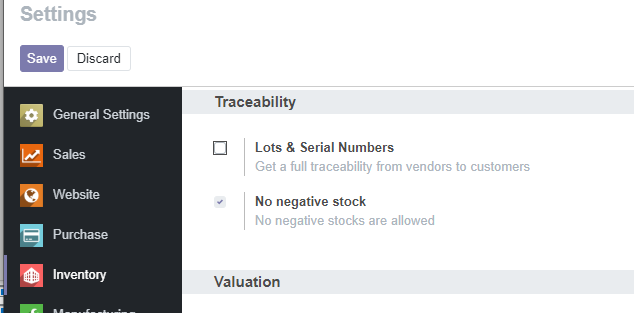

<section class="oe_container">
    <div class="oe_row oe_spaced">
        <h2 class="oe_slogan" style="color:#875A7B;">No Negative Stock</h2>
        <h3 class="oe_slogan">=^..^=</h3>
        
    </div>
</section>


<section class="oe_container oe_dark">
    <div class="oe_row oe_spaced">
        
        <div class="oe_span6">
<h2 style="color:#875A7B;">Usage</h2>
        <ul class="list-unstyled">
	    <li>x Login as Administrator</li>
            <li>x Inventory -> Configuration -> Settings</li>
		<ul>
	    	<li>Traceability
		<li> -> Negative Stock</li>
		</ul>
         </ul>
        </div>
        <div class="oe_span6">
          
        </div>
    </div>
</section>

<section class="oe_container">
    <div class="oe_row oe_spaced">
        <h2 style="color:#875A7B;">Source</h2>
  
        
 	<a href="https://github.com/dhongu/deltatech/tree/11.0">GIT: https://github.com/dhongu/deltatech/tree/12.0</a>
          
        </div>
    </div>
</section>

<section class="oe_container">
    <div class="oe_row oe_spaced">
        <h2 style="color:#875A7B;">Credits</h2>
	<h3 style="color:#875A7B;">Contributors</h3>
  
          <p class="oe_mt32 text-justify">
          Terrabit, Dorin Hongu
          </p>
	
	<h3 style="color:#875A7B;">Maintainer</h3>
  
          <p class="oe_mt32 text-justify">
          This module is maintained by 
<a href="http://terrabit.ro/">Terrabit</a> 
          </p>
        </div>
    </div>
</section>
